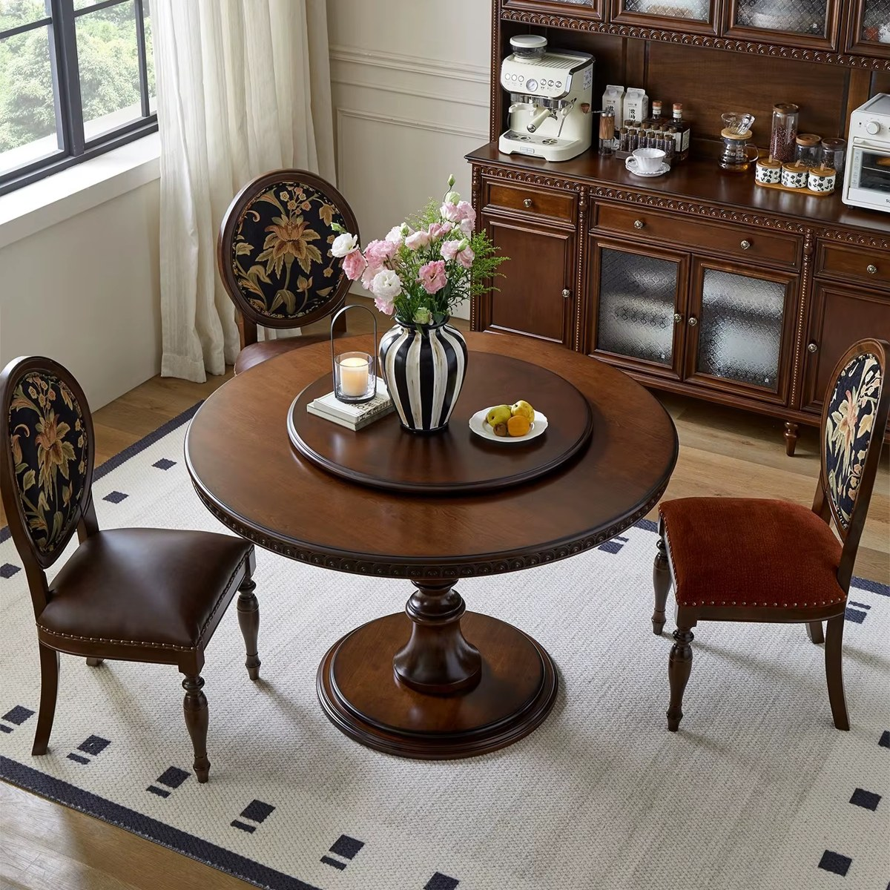
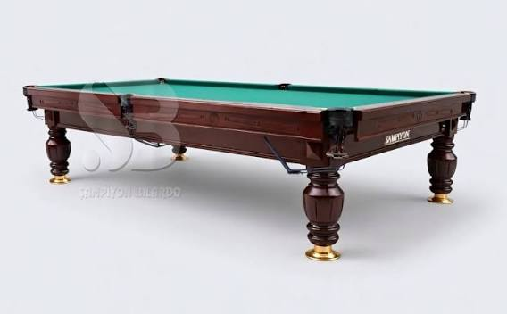
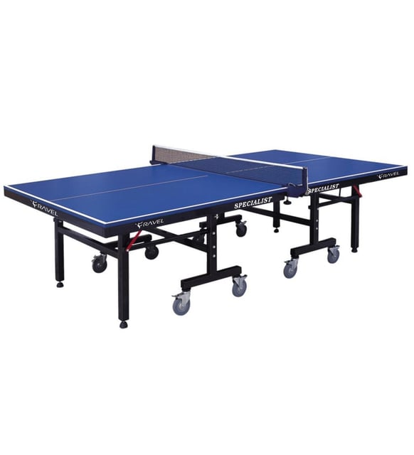

| masacınız. | Tel: 1234567 |
Her sofranın ve her oyunun başrolü.Yemek masasından bilardo masasına, evinizin ölçüsüne göre üretiyoruz. Sağlam malzeme, sade tasarım ve kapıya kadar kurulum. ✓ Özel ölçü üretim ✓ Kurulum dahil ✓ 2 yıl garanti |
 |
Sofra, oyun ve keyif için üç farklı masa ailesi.
Yemek MasasıMasif ceviz ve meşe seçenekleriyle, döner tablalı ya da sade. Ailenizin ölçüsüne göre üretilir. |
 Bilardo MasasıProfesyonel mermer taban, gerçek keçe ve masif gövde. Kulüp kalitesini evinize taşır. |
 Masa TenisiKalın profesyonel taban, katlanabilir gövde ve turnuva filesi. Tek hamlede oyuna hazır. |
Özel ölçüMekânınıza göre milimetrik üretim. |
Usta işçilikMasif ahşap ve sağlam birleşimler. |
Teslimat ve kurulumİstanbul içinde kendi ekibimizle. |
2 yıl garantiİskelet ve işçilik güvencesi. |
Ahşap işçiliğinde 35 yıl.Bomonti'deki atölyemizde masaları elde üretiyoruz. Doğru ağacı seçiyor, kurutuyor ve yıllarca kullanılacak şekilde birleştiriyoruz.
✓ Masif ceviz, meşe ve kayın 35 yıl deneyim | 1.200+ teslim | 4,9/5 puan |
Sofralar ve oyunlar için el yapımı masalar. İstanbul'da üretiyor, Türkiye'ye gönderiyoruz.
Adres: Bomonti Caddesi No: 00, Şişli / İstanbul
Tel: 1234567
E-posta: 1234567
© 2026 Masacınız. Tüm hakları saklıdır.